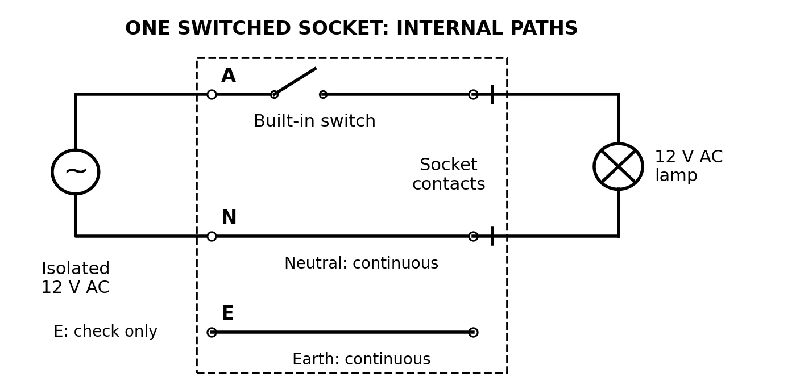

Lesson 07: Switched outlets
Switched-outlet model | 12 V AC
Name: ____________________ Class: __________ Date: __________
Build and change circuits with the supply disconnected. Ask for a teacher check before testing.
1. Why did our circuits fail?
Two possible causes of our failed circuits: ______________________________
2. Household conductors: A, N and E
Match each conductor to a function: 1 = normal return path; 2 = protective fault path; 3 = supply conductor.
A (active/live): ____ N (neutral): ____ E (protective earth): ____
These are household roles. Today’s supply has two isolated 12 V AC terminals.
3. Connect and test the switched outlet
Connect the supply cable to the outlet’s labelled terminals using the checked example. Its switch-to-socket connection is already built in. Test with a 12 V AC lamp.

A/N/E name the fixture terminals, not the isolated supply outputs. Check E continuity separately. Common is a switch-contact label, not neutral.
Teacher check: ____ Open: lamp ____ Closed: lamp ____
The built-in switch interrupts: ____
4. Exit check
One connection-quality check: ___________________________________
Why switch active rather than only neutral? _________________________